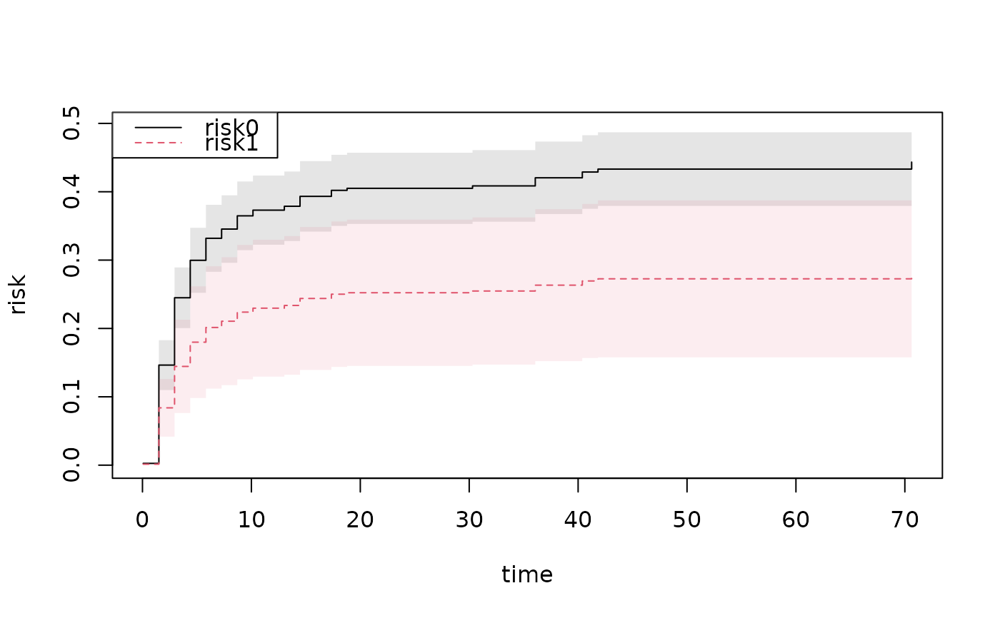

Computes G-estimator $$ \hat S(t,A=a) = n^{-1} \sum_i \hat S(t,A=a,Z_i) $$ for the Cox model based on phreg og the Fine-Gray model based on the cifreg function. Gives influence functions of these risk estimates and SE's are based on these. If first covariate is a factor then all contrast are computed, and if continuous then considered covariate values are given by Avalues.
survivalG(
x,
data,
time = NULL,
Avalues = c(0, 1),
varname = NULL,
same.data = TRUE,
id = NULL,
subdata = NULL
)phreg or cifreg object
data frame for risk averaging
for estimate
values to compare for first covariate A
if given then averages for this variable, default is first variable
assumes that same data is used for fitting of survival model and averaging.
might be given to link to data to iid decomposition of survival data, must be coded as 1,2,..,
rows or TRUE/FALSE to select which part of the data that is used for the G-computation. Might be treated
data(bmt); bmt$time <- bmt$time+runif(408)*0.001
bmt$event <- (bmt$cause!=0)*1
dfactor(bmt) <- tcell.f~tcell
fg1 <- cifreg(Event(time,cause)~tcell.f+platelet+age,bmt,cause=1,
cox.prep=TRUE,propodds=NULL)
summary(survivalG(fg1,bmt,50))
#> G-estimator :
#> Estimate Std.Err 2.5% 97.5% P-value
#> risk0 0.4332 0.02749 0.3793 0.4870 6.316e-56
#> risk1 0.2726 0.05861 0.1577 0.3875 3.297e-06
#>
#> Average Treatment effect: difference (G-estimator) :
#> Estimate Std.Err 2.5% 97.5% P-value
#> ps0 -0.1605 0.0635 -0.285 -0.03607 0.01147
#>
#> Average Treatment effect: ratio (G-estimator) :
#> log-ratio:
#> Estimate Std.Err 2.5% 97.5% P-value
#> [ps0] -0.4630061 0.2211506 -0.8964533 -0.02955888 0.03629353
#> ratio:
#> Estimate 2.5% 97.5%
#> 0.6293888 0.4080142 0.9708737
#>
#> Average Treatment effect: 1-G (survival)-ratio (G-estimator) :
#> NULL
#>
ss <- phreg(Surv(time,event)~tcell.f+platelet+age,bmt)
summary(survivalG(ss,bmt,50))
#> G-estimator :
#> Estimate Std.Err 2.5% 97.5% P-value
#> risk0 0.6539 0.02708 0.6008 0.7069 8.837e-129
#> risk1 0.5639 0.05971 0.4469 0.6810 3.573e-21
#>
#> Average Treatment effect: difference (G-estimator) :
#> Estimate Std.Err 2.5% 97.5% P-value
#> ps0 -0.08992 0.06291 -0.2132 0.03338 0.1529
#>
#> Average Treatment effect: ratio (G-estimator) :
#> log-ratio:
#> Estimate Std.Err 2.5% 97.5% P-value
#> [ps0] -0.1479471 0.1095497 -0.3626606 0.06676628 0.1768548
#> ratio:
#> Estimate 2.5% 97.5%
#> 0.8624767 0.6958226 1.0690456
#>
#> Average Treatment effect: 1-G (survival)-ratio (G-estimator) :
#> Estimate Std.Err 2.5% 97.5% P-value
#> [ps0] 0.2309406 0.1503721 -0.06378329 0.5256645 0.1245888
#>
ss <- phreg(Surv(time,event)~strata(tcell.f)+platelet+age,bmt)
summary(survivalG(ss,bmt,50))
#> G-estimator :
#> Estimate Std.Err 2.5% 97.5% P-value
#> risk0 0.6441 0.02727 0.5906 0.6975 2.397e-123
#> risk1 0.6172 0.07125 0.4776 0.7568 4.611e-18
#>
#> Average Treatment effect: difference (G-estimator) :
#> Estimate Std.Err 2.5% 97.5% P-value
#> ps0 -0.02687 0.07622 -0.1763 0.1225 0.7244
#>
#> Average Treatment effect: ratio (G-estimator) :
#> log-ratio:
#> Estimate Std.Err 2.5% 97.5% P-value
#> [ps0] -0.04261856 0.1228491 -0.2833984 0.1981613 0.728653
#> ratio:
#> Estimate 2.5% 97.5%
#> 0.9582769 0.7532197 1.2191590
#>
#> Average Treatment effect: 1-G (survival)-ratio (G-estimator) :
#> Estimate Std.Err 2.5% 97.5% P-value
#> [ps0] 0.07278456 0.2010782 -0.3213214 0.4668906 0.7173734
#>
sst <- survivalGtime(ss,bmt,n=50)
#> Warning: NaNs produced
#> Warning: NaNs produced
#> Warning: NaNs produced
#> Warning: NaNs produced
plot(sst)
fg1t <- survivalGtime(fg1,bmt,n=50)
plot(fg1t)
